Ici seront placées au fur et à
mesure toutes les news concernant la Playstation 2! Les images, les reportages,
les infos, les rumeurs, les spécifications techniques... Tout koi!
Cette page est loin d'être définitive,
les news arriveront jour après jour suivant l'actualité de
la deuxième bête de sony, la Playstation 2!
News
OFFICIEL
Menu
des News Playstation2:
1)Avant
première, les premières images
2)Les
infos
3)Spécifications
techniques
Les
premières image de jeu: Après les mots, les images.
Voici les premières
démonstrations visuelles des capacités de la Playstation
2:
Sans que l'on
sache trop comment, des images des rapides vidéos de démonstration
exposées lors de la conférence de mardi circulent officieusement
sur le web... Ces vidéos ont, dit-on, été réalisées
en deux semaines. Si l'on peut ne pas se laisser impressionner par les
cinématiques qui ont défilé lors de cette démonstration,
il faut juste garder en mémoire que ces images sont normalement
en temps réel et donc modifiables au gré de l'intervenant.
Ainsi au fil des maigres images nous verrons des visages lisses ou craquelés
finement animés, des voitures comme on les connaît
dans les meilleurs
cinématiques, et, plus nouveau, des matières en mouvement
(voir ci-dessous) censées exprimer les aptitudes des processeurs
à dessiner des multitudes de lignes courbes en 3D tout en gardant
en mémoire leurs trajets. Après les premiers écrans
ci-après vous pourrez lire une description détaillée
des trois vidéos qui circulent sur le réseau, avec quelques
captures de notre cru. A quelques détails près ces vidéos
sont semblables.
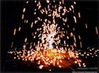 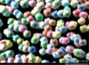 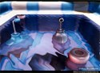
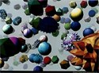 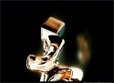 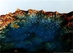
Description de la première
vidéo :
A
l'instar des mannequins en plein défilé haute couture, la
jeune femme emblématique de Ridge Racer 4 fait une apparition sur
un podium. Cela donne l'occasion de voir ses longues jambes parfaitement
dessinées et animées. La mini séquence finie sur son
visage
et un clin d'oeil. S'en suit un montage rapide de cinématiques à
la Gran Turismo. Une séquence montre ensuite un visage parcheminé
et animé qui se démultiplie ensuite. Rien d'extraordinaire
non plus sinon le fait d'envisager de le modifier en temps réel.
Passent ensuite, beaucoup trop vite, des images d'un Tekken en 3D complète.
Non seulement les combattants sont réellement modélisés
mais la caméra qui tourne autour du ring improvisé dévoile
une foule attentive tout aussi détaillée.
Cette
vidéo finit sur un Crash Bandicoot en tête d'un cortège
de nombreux pingouins qui vient vers nous. Tout cela évidemment
animé comme une séquence cinématique.
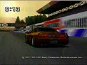 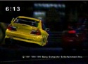 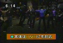
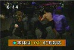 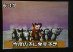 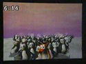
Description de la deuxième
vidéo :
Mêmes
extraits que la première, plus une vue d'ensemble de la conférence
et du grand écran où les images sont projetées. Des
images des matières en mouvement telles des multitudes de plumes
colorées s'y animent de mille façons. Une scène qui
pourrait
appartenir
à la série des Castlevania fait bouger des squelettes et
un boss lui aussi uniquement constitué d'os.
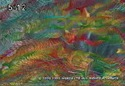 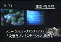 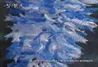
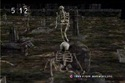 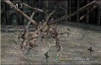 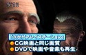
Description de la troisième
vidéo :
Encore
essentiellement une répétition des deux autres vidéo.
La séquence de groupe de Tekken est cette fois remplacée
par un rapide échange de coups en tête à tête.
Et puis une scène plus éthérée où un
couple danse au centre d'un grand décor vient
conclure
la démonstration.
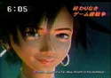 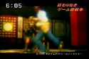 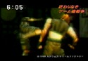
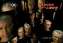 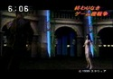
Remerciements, entre autres, à Game
online et Next generation
on line
où vous pourrez trouver ces vidéos au
format mpeg.
INFO: OVERGAMES
Infos diverses concernant
la Playstation 2:
ANNONCES OFFICIELLES
PLAYSTATION
2 : 100% compatible Playstation 1 !
S'engageant enfin sur
un chemin souhaité par tant de joueurs, la nouvelle Playstation
acceptera les jeux de la Playstation première génération.
Cette compatibilité sera à 100% grâce à un nouveau
processeur I/O qui est en fait un upgrade direct du processeur actuel de
la Playstation. Ce I/O a une mémoire cache plus importante et une
capacité de transfert 4 fois plus importante. L'interface série
sera quant à elle 20 fois plus rapide que la Playstation actuelle
! Les deux ports USB et IEEE prévus pour la Playstation 2 seront
également intégrés dans cette puce améliorée.
Playstation
2 : CD + DVD!!!
Aujourd'hui, mardi 2
mars 1999, Ken Kutaragi annonce officiellement la Playstation 2 lors d'une
conférence de presse à Tokyo. Conformément à
son intervention au récent Milia de Cannes 99, le père de
la Playstation originelle, Ken Kutaragi, également responsable de
Sony Computer Entertainment US, vient de communiquer les décisions
finales des laboratoires de recherches R&D de Sony... Capable de lire
des CD-Rom "standards", sans doute au format Playstation 2, et les anciens
CD de la Playstation 1, le futur monstre de Sony sera surtout capable de
lire les DVD. Ces nouveaux disques (Digital Versatile Disk) pouvant contenir
plusieurs couches d'informations (double couche et Recto-Verso) ont une
capacité de stockage de 4,7 Go. A titre d'exemple les 4000 images
hautes résolutions et animations du jeu Riven nécessitent
5 CD-Rom tandis que le jeu au complet tient sur un seul DVD-Rom…
Grâce à
sa nouvelle convivialité, le DVD de "salon" est pour l'instant plus
répandu dans les foyers comme support de film (un film contient
sur une seule face). Le DVD-Rom met donc plus de temps pour s'affirmer
sur le marché de la micro. Néanmoins toute l'industrie se
dirige vers ce nouveau support. L'adoption officielle du format par Sony
pour sa Playstation 2 convertira les derniers réticents de l'avenir
de ce format. Grâce au circuit de décodage du format MPEG
2 sur l'une de ses puces, la Playstation 2 pourra affichée simultanément
des images 3D hautes résolution en même temps que des images
vidéo en haute définition issues du DVD. "La combinaison
des deux procédés va introduire une nouvelle approche du
loisir digital et des images de synthèse en temps réel" affirme
Sony.
PLAYSTATION
2 : Son AC-3 et DTS
Aujourd'hui,
mardi 2 mars 1999, Ken Kutaragi annonce officiellement la Playstation 2
lors d'une conférence de presse à Tokyo. Conformément
à son intervention au récent Milia de Cannes 99, le père
de la Playstation originelle, Ken Kutaragi, également responsable
de Sony Computer Entertainment US, vient de communiquer les décisions
finales des laboratoires de recherches R&D de Sony...
Puisque
le support privilégié de la Playstation 2 sera le DVD, il
est normal que Sony n'oublie pas le son avec les images. Normes sonores
choisies : l'AC-3 et le DTS.
Les
capacités énormes du DVD et les aptitudes de ses processeurs
vont évidemment permettre à la Playstation 2 de générer
des sons 3D digitaux multi-canaux. Plus précisément, la Playstation
2 va reconnaître deux des formats de sons les plus sophistiqués
: l'AC-3 et le DTS (concurrents des labels Dolby Digital et THX américains).
Des procédés sonores dont l'application était jusqu'ici
réservé aux équipement hauts de gamme Home Cinéma.
Si la Playstation 2 décode elle-même ces signaux, l'utilisateur
n'aurait pas l'obligation de possédé un ampli Hifi dédié
à cette norme pour profiter de ces sons digitaux. Utiliser quatre
enceintes sera néanmoins indispensable pour ressentir complètement
les effets de "spacialisation" du son.
PLAYSTATION
2 : Processeur d'images de synthèse
Aujourd'hui,
mardi 2 mars 1999, Ken Kutaragi annonce officiellement la Playstation 2
lors d'une conférence de presse à Tokyo.
Conformément
à son intervention au récent Milia de Cannes 99, le père
de la
Playstation
originelle, Ken Kutaragi, également responsable de Sony Computer
Entertainment
US, vient de communiquer les décisions finales des laboratoires
de
recherches
R&D de Sony... En parallèle avec le processeur EE (Emotion Engine)
de Toshiba (voir Actu complémentaire), le cœur de la Playstation
2 sera constitué d'un processeur graphique : le Synthétiseur
Graphique (G.S.). Ce Synthétiseur Graphique contient un bus dont
le taux de transfert de 2 560 bits serait 20 fois plus
performants
que les derniers accélérateurs graphiques pour PC. Via les
sorties digitales haute définition (ainsi que les sorties NTSC/PAL
et VESA) la qualité d'affichage
peut
atteindre celle des images de synthèse 3D trouvées dans les
productions cinématographiques : "La puissance informatique utilisée
jusqu'ici pour créer des images de synthèse pour le cinéma
pourra désormais être utilisée dans le divertissement
à domicile" affirme Ken Kutaragi, vice-président de Sony
Computer Entertainement Japon, et père de la Playstation.
PLAYSTATION
2: Ouvert à Linux !
Aujourd'hui,
mardi 2 mars 1999, Ken Kutaragi annonce officiellement la Playstation 2
lors d'une conférence de presse à Tokyo. Conformément
à son intervention au récent Milia de Cannes 99, le père
de la Playstation originelle, Ken Kutaragi, également responsable
de Sony Computer Entertainment US, vient de communiquer les décisions
finales des laboratoires de recherches R&D de Sony...
Le
monstre que semble devoir être la Playstation du prochain millénaire
va utiliser le système d'exploitation Linux. Ce système d'exploitation
ouvert, et sans "propriétaire", associé au nouveau processeur
de Toshiba EE (Emotion Engine, voir Actu complémentaire) se place
d'emblée en concurrence avec le Windows de Microsoft et le Pentium
de Intel. Sans déclaration de guerre officielle, les japonais
sont ainsi en train de prendre d'assaut le cœur de la micro en passant
par l'industrie de loisirs. Le monopole des américains de la côte
ouest pourrait bien voir l'initiative du pays du soleil levant les éblouir
dans les mois qui viennent. La collaboration de Sega avec Microsoft pour
inclure Windows CE dans la Dreamcast fait aujourd'hui figure d'acceptation
peut-être un peu trop rapide de l'hégémonie Microsoft.
Les 50 millions de Playstation de par le monde donnent à Sony les
moyens de faire de la résistance et peut-être même,
avec Toshiba, l'ambition de courir après le trône américain.
PLAYSTATION
2 : Sortie Mars 2000 !
Aujourd'hui,
mardi 2 mars 1999, Ken Kutaragi annonce officiellement la Playstation 2
lors d'une conférence de presse à Tokyo.
Conformément
à son intervention au récent Milia de Cannes 99, le père
de la
Playstation
originelle, Ken Kutaragi, également responsable de Sony Computer
Entertainment
US, vient de communiquer les décisions finales des laboratoires
de
recherches
R&D de Sony... Suite à tous les détails techniques énoncés
(Cf Actu complémentaire) et pour donner le temps nécessaire
aux développeurs de créer les jeux "utilisant au mieux cette
puissante technologie", la Playstation 2 sortira en mars 2000 au Japon,
soit dans exactement un an. La sortie aux Etats-Unis et en Europe est planifiée
pour l'automne 2000. Les kits de développement seront distribués
aux éditeurs dès ce mois d'avril.
Spécifications
techniques:
128 bits d'Emotion
Au cœur de la Playstation
2, Sony et Toshiba ont greffé "l'Emotion Engine", le "moteur à
émotions". (en terme d'imagerie new age censé poétiser
le hardware, on pense évidemment à la Dreamcast - "machine
à rêver" de Sega). Un processeur au nom évocateur (E.E.)
qui est capable de calculer à très grande vitesse des informations
multimédias haut de gamme. Alors que les PC les plus récents
fonctionnent avec, au maximum, des processeurs 64 bits , le processeur
E.E. de la Paystation 2 est un processeur 128 bits complet. Il devra être
au service des jeux évidemment mais Sony envisage aussi que la Playstation
2 puisse servir de support à toutes les "futures
applications digitales".
De plus, la capacité de calcul du processeur de 6,2 gigaflops /s
(millions d'opérations en virgule flottante par seconde), aligne
les aptitudes de la Playstation 2 à celles des "super-ordinateurs
pour la recherche scientifique". La future console pourra effectuer "des
calculs en trois dimensions à des vitesses extrêmement rapides"
comme en sont capables les stations de travails les plus avancées.
Ainsi, l'unité centrale de la Playstation nouvelle génération
serait 15 fois plus rapide que le Pentium II, et trois fois plus rapide
que le récent Pentium III d'Intel.
Visant haut, Sony estime
que cette nouvelle puce "va permettre d'accélérer la convergence
du cinéma, de la musique et de l'informatique dans une nouvelle
forme de divertissement reposant sur les technologies numériques."
"La nouvelle génération de Playstation va ouvrir une nouvelle
ère dans l'histoire des jeux vidéo" a déclaré
Nobuyuki Idei, le Président de Sony Japon. Voici en détails
les spécifications techniques du moteur à émotions
(E.E.). Comme pour le Synthétiseur Graphique nous avons, un peu
lâchement, gardé les termes anglais pour éviter tout
mauvais techno-jargon en français. En attendant mieux… Les chiffres
parlent d'eux-mêmes…
Spécifications
techniques du moteur à émotions (E.E.)
CPU core 128 bit
RISC (MIPS IV-subset)
Fréquence de l'horloge:
300MHz
Integer Unit 64bit (2-way
Superscalar)
Multimedia extended instructions
107 instructions at 128 bit width
Integer General Purpose
Register 32 at 128 bit width
TLB 48 double entries
Instruction
Cache 16KB (2-way)
Data Cache 8KB (2-way)
Scratch Pad RAM 16KB
(Dual port)
Main Memory 32MB (Direct
RDRAM 2ch@800MHz)
Memory bandwidth 3.2GB/sec
DMA 10 channels
Co-processor 1 FPU (FMAC
x 1, FDIV x 1)
Co-processor 2 VU0 (FMAC
x 4, FDIV x 1)
Micro Memory (I:4KB D:4KB)
Vector Processing Unit
VU1 (FMAC x 5, FDIV x 2)
Micro Memory (I:16KB
D:16KB)
Floating Point Performance
6.2GFLOPS
GEOMETRY
+ Perspective Transformation
66 Million Polygons/sec
+ Lighting 38 Million
Polygons/sec
+ Fog 36 Million Polygons/sec
Curved Surface Generation
(Bezier)16Million Polygons/sec
Image Processing
Unit MPEG2 Macroblock Layer Decoder
Image Processing Performance
150Million Pixels/sec
Gate width 0.18 micron
VDD Voltage 1.8 V
Power Consumption 15
Watts
Metal Layers 4
Total Transistors 10.5
Million
Die Size 240 mm2
Package 540pin PBGA
Le
son de la Playstation 2 :
SPU2+CPU
Nombre
de voies
ADPCM:
48ch on SPU2 plus definable,
software
programmable voices
Fréquence
d'échantillonnage 44.1 KHz or 48 KHz (selectable)
Synthétiseur
Graphique:
GS
Core Parallel Rendering Processor with embedded DRAM
Clock
Frequency 150 MHz
No.
of Pixel Engines 16 (in Parallel)
Embedded
DRAM 4 MB of multi-port DRAM (Synced at 150MHz)
Total
Memory Bandwidth 48 Giga Bytes per Second
Combined
Internal Data Bus bandwidth 2560 bit
Read
1024 bit
Write
1024 bit
Texture
512 bit
Display
Colour Depth
32
bit (RGBA: 8 bits each)
Z
Buffering 32 bit
RENDERING
FONCTIONS
Texture
Mapping
Bump
Mapping
Fogging,
Alpha
Blending
Bi-
and Tri-Linear Filtering
MIPMAP
Anti-aliasing
Multi-pass
Rendering
RENDERING
PERFORMANCE
Pixel
Fill Rate
2.4
Giga Pixel per Second
(with
Z buffer and Alphablend enabled)
1.2
Giga Pixel per Second
(with
Z buffer, Alpha and Texture)
Particle
Drawing Rate
150
Million /sec
Polygon
Drawing Rate:
75
Million /sec (small polygon)
50
Million /sec (48 Pixel quad with Z and A)
30
Million /sec (50 Pixel triangle with Z and A)
25
Million /sec (48 Pixel quad with Z, A and T)
Sprite
Drawing Rate 18.75 Million (8 x 8 Pixels)
Display
output NTSC/PAL
Digital
TV (DTV)
VESA
(maximum 1280 x 1024 pixels)
Silicon
process technology 0.25 m 4-level metal
Total
number of transistors 43 Millions
Die
size 279mm2
Package
Type 384 pin BGA
REVENIR AU DOSSIER PLAYSTATION 2
|